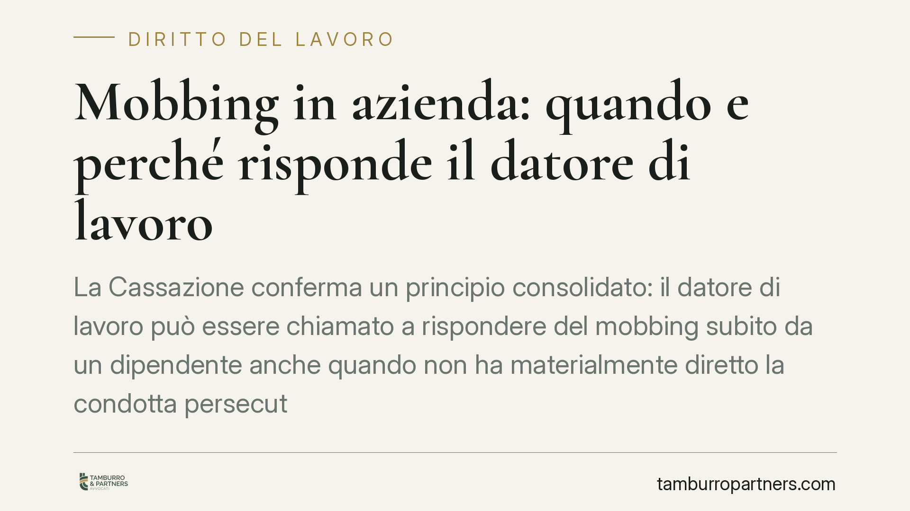

Mobbing in azienda: quando e perché risponde il datore di lavoro
La Cassazione conferma un principio consolidato: il datore di lavoro può essere chiamato a rispondere del mobbing subito da un dipendente anche quando non ha materialmente diretto la condotta persecutoria. La responsabilità nasce dall'obbligo di tutelare l'integrità fisica e la personalità morale di chi lavora. Vediamo cosa cambia in concreto per aziende e lavoratori.

Il fatto
Un dipendente lamenta comportamenti vessatori sistematici sul luogo di lavoro e chiede il risarcimento del danno psicofisico. La difesa aziendale sostiene che le condotte provenivano da singoli colleghi e non dal datore di lavoro. La Cassazione, in linea con un orientamento ormai consolidato della Sezione Lavoro, respinge questa impostazione: l'azienda risponde comunque, per non avere impedito o fatto cessare la situazione.
Il punto è cruciale. La responsabilità del datore non dipende dall'aver ordinato o organizzato la persecuzione, ma dall'aver violato un obbligo di protezione che la legge gli impone.
Inquadramento normativo
La norma cardine è l'art. 2087 del Codice civile, che impone all'imprenditore di adottare tutte le misure necessarie a tutelare "l'integrità fisica e la personalità morale dei prestatori di lavoro". Si tratta di un obbligo di sicurezza a contenuto aperto: comprende non solo la prevenzione degli infortuni, ma anche la protezione da condotte lesive della dignità della persona.
Da qui deriva la responsabilità del datore per il mobbing perpetrato da colleghi (cosiddetto mobbing orizzontale): se conosceva o poteva conoscere la situazione e non è intervenuto, ha violato l'art. 2087 c.c. L'inquadramento si rafforza col D.Lgs. 81/2008, che include tra i rischi da valutare lo stress lavoro-correlato, e con l'art. 2103 c.c. quando la vessazione passa attraverso demansionamenti o svuotamento di mansioni.
Mobbing, straining e semplice conflitto
Non ogni tensione sul lavoro è mobbing. La giurisprudenza distingue tre situazioni diverse.
Il mobbing richiede una pluralità di atti ostili, reiterati nel tempo e coordinati da un intento persecutorio unitario. Un singolo episodio, per quanto grave, non integra mobbing.
Lo straining è una forma "attenuata": manca la sistematicità continua, ma esiste una condizione stressogena creata volontariamente, ad esempio con un demansionamento durevole. Anche lo straining, secondo la Cassazione, può fondare il risarcimento ex art. 2087 c.c.
Il mero conflitto lavorativo — divergenze, critiche legittime, esercizio del potere direttivo — non è illecito. La difficoltà pratica sta proprio nel qualificare i fatti: è la prova dell'intento persecutorio e della sistematicità a spostare l'ago della bilancia.
Implicazioni pratiche
Per il lavoratore cambia poco sul piano dell'onere probatorio, che resta impegnativo: deve dimostrare la pluralità e sistematicità delle condotte, l'intento vessatorio e il nesso con il danno alla salute. La responsabilità del datore ha natura contrattuale, con prescrizione decennale; se si agisce sul versante extracontrattuale (art. 2043 c.c.), il termine scende a cinque anni. La scelta incide su prova e tempistica e va ponderata con attenzione.
Per il datore di lavoro e per l'area HR il messaggio è chiaro: l'assenza di un ordine diretto non basta a escludere la responsabilità. Ciò che rileva è l'inerzia di fronte a segnali noti o conoscibili. Un sistema di prevenzione documentato e reattivo diventa la prima linea di difesa.
Cosa fare in concreto
Se sei un lavoratore:
- Documenta con precisione ogni episodio: date, luoghi, testimoni, comunicazioni scritte.
- Conserva certificazioni mediche che attestino il danno psicofisico e il nesso con l'ambiente di lavoro.
- Verifica la natura dell'azione (contrattuale o extracontrattuale) prima di agire, per non incorrere nella prescrizione.
Se gestisci un'azienda o le risorse umane:
- Adotta e aggiorna la valutazione del rischio da stress lavoro-correlato prevista dal D.Lgs. 81/2008.
- Predisponi un canale interno di segnalazione e intervieni tempestivamente sui casi noti, tenendo traccia delle azioni adottate.
- Forma i responsabili di reparto a riconoscere e non tollerare condotte vessatorie tra colleghi.
La qualificazione dei fatti come mobbing, straining o conflitto è tecnica e delicata: incide sull'esito e sui termini. Una lettura preliminare della documentazione consente di impostare correttamente la posizione.
---
Contributo informativo a cura di Tamburro & Partners - Avv. Giuseppe Tamburro. Non costituisce parere legale.
Ogni storia di lavoro ha i suoi tempi.
Se gestisci HR e vuoi un confronto su contenzioso, ispezioni o licenziamenti, scrivi allo studio. Ti rispondiamo entro un giorno lavorativo.